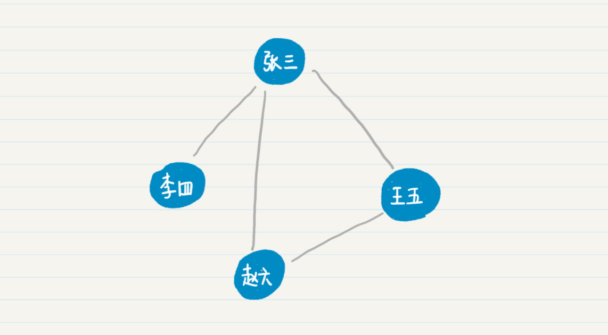
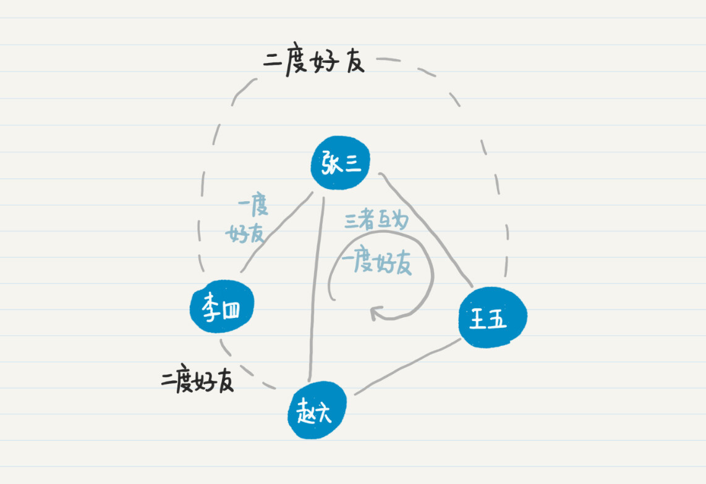
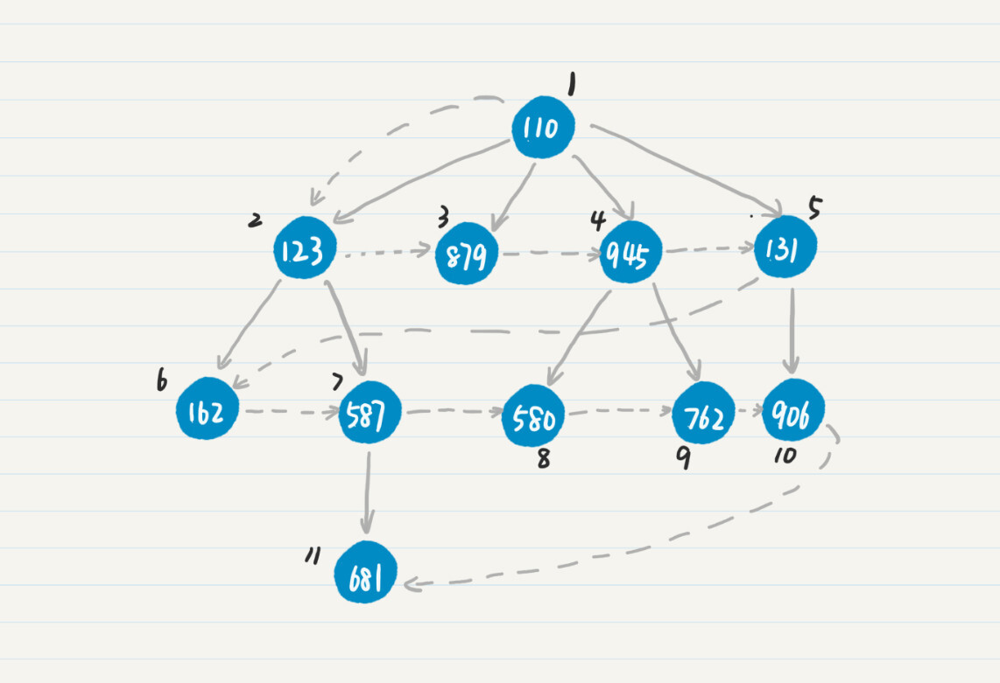
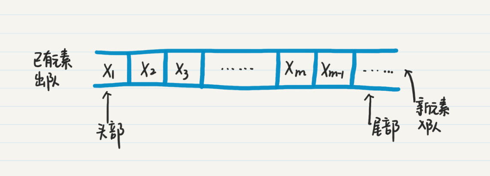
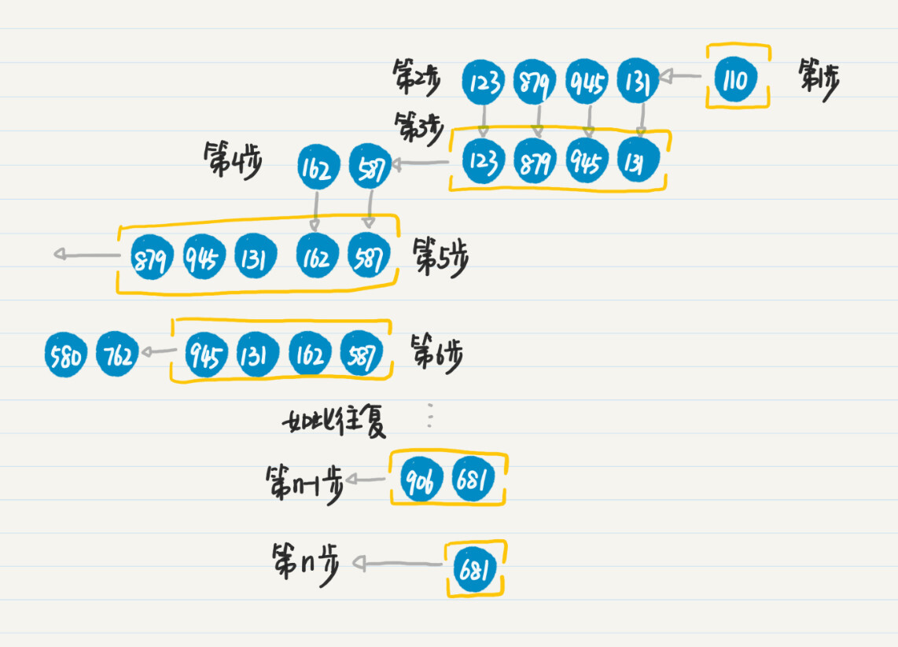

- 01 二进制：不了解计算机的源头，你学什么编程.md.html
- 02 余数：原来取余操作本身就是个哈希函数.md.html
- 03 迭代法：不用编程语言的自带函数，你会如何计算平方根？.md.html
- 04 数学归纳法：如何用数学归纳提升代码的运行效率？.md.html
- 05 递归（上）：泛化数学归纳，如何将复杂问题简单化？.md.html
- 06 递归（下）：分而治之，从归并排序到MapReduce.md.html
- 07 排列：如何让计算机学会“田忌赛马”？.md.html
- 08 组合：如何让计算机安排世界杯的赛程？.md.html
- 09 动态规划（上）：如何实现基于编辑距离的查询推荐？.md.html
- 10 动态规划（下）：如何求得状态转移方程并进行编程实现？.md.html
- 11 树的深度优先搜索（上）：如何才能高效率地查字典？.md.html
- 12 树的深度优先搜索（下）：如何才能高效率地查字典？.md.html
- 13 树的广度优先搜索（上）：人际关系的六度理论是真的吗？.md.html
- 14 树的广度优先搜索（下）：为什么双向广度优先搜索的效率更高？.md.html
- 15 从树到图：如何让计算机学会看地图？.md.html
- 16 时间和空间复杂度（上）：优化性能是否只是“纸上谈兵”？.md.html
- 17 时间和空间复杂度（下）：如何使用六个法则进行复杂度分析？.md.html
- 18 总结课：数据结构、编程语句和基础算法体现了哪些数学思想？.md.html
- 19 概率和统计：编程为什么需要概率和统计？.md.html
- 20 概率基础（上）：一篇文章帮你理解随机变量、概率分布和期望值.md.html
- 21 概率基础（下）：联合概率、条件概率和贝叶斯法则，这些概率公式究竟能做什么？.md.html
- 22 朴素贝叶斯：如何让计算机学会自动分类？.md.html
- 23 文本分类：如何区分特定类型的新闻？.md.html
- 24 语言模型：如何使用链式法则和马尔科夫假设简化概率模型？.md.html
- 25 马尔科夫模型：从PageRank到语音识别，背后是什么模型在支撑？.md.html
- 26 信息熵：如何通过几个问题，测出你对应的武侠人物？.md.html
- 27 决策树：信息增益、增益比率和基尼指数的运用.md.html
- 28 熵、信息增益和卡方：如何寻找关键特征？.md.html
- 29 归一化和标准化：各种特征如何综合才是最合理的？.md.html
- 30 统计意义（上）：如何通过显著性检验，判断你的A_B测试结果是不是巧合？.md.html
- 31 统计意义（下）：如何通过显著性检验，判断你的A_B测试结果是不是巧合？.md.html
- 32 概率统计篇答疑和总结：为什么会有欠拟合和过拟合？.md.html
- 33 线性代数：线性代数到底都讲了些什么？.md.html
- 34 向量空间模型：如何让计算机理解现实事物之间的关系？.md.html
- 35 文本检索：如何让计算机处理自然语言？.md.html
- 36 文本聚类：如何过滤冗余的新闻？.md.html
- 37 矩阵（上）：如何使用矩阵操作进行PageRank计算？.md.html
- 38 矩阵（下）：如何使用矩阵操作进行协同过滤推荐？.md.html
- 39 线性回归（上）：如何使用高斯消元求解线性方程组？.md.html
- 40 线性回归（中）：如何使用最小二乘法进行直线拟合？.md.html
- 41 线性回归（下）：如何使用最小二乘法进行效果验证？.md.html
- 42 PCA主成分分析（上）：如何利用协方差矩阵来降维？.md.html
- 43 PCA主成分分析（下）：为什么要计算协方差矩阵的特征值和特征向量？.md.html
- 44 奇异值分解：如何挖掘潜在的语义关系？.md.html
- 45 线性代数篇答疑和总结：矩阵乘法的几何意义是什么？.md.html
- 46 缓存系统：如何通过哈希表和队列实现高效访问？.md.html
- 47 搜索引擎（上）：如何通过倒排索引和向量空间模型，打造一个简单的搜索引擎？.md.html
- 48 搜索引擎（下）：如何通过查询的分类，让电商平台的搜索结果更相关？.md.html
- 49 推荐系统（上）：如何实现基于相似度的协同过滤？.md.html
- 50 推荐系统（下）：如何通过SVD分析用户和物品的矩阵？.md.html
- 51 综合应用篇答疑和总结：如何进行个性化用户画像的设计？.md.html
- 导读：程序员应该怎么学数学？.md.html
- 开篇词 作为程序员，为什么你应该学好数学？.md.html
- 数学专栏课外加餐（一） 我们为什么需要反码和补码？.md.html
- 数学专栏课外加餐（三）：程序员需要读哪些数学书？.md.html
- 数学专栏课外加餐（二） 位操作的三个应用实例.md.html
- 结束语 从数学到编程，本身就是一个很长的链条.md.html
- 捐赠
13 树的广度优先搜索（上）：人际关系的六度理论是真的吗？
你好，我是黄申。
上一节，我们探讨了如何在树的结构里进行深度优先搜索。说到这里，有一个问题，不知道你有没有思考过，树既然是两维的，我们为什么一定要朝着纵向去进行深度优先搜索呢？是不是也可以朝着横向来进行搜索呢？今天我们就来看另一种搜索机制，广度优先搜索。
社交网络中的好友问题
LinkedIn、Facebook、微信、QQ这些社交网络平台都有大量的用户。在这些社交网络中，非常重要的一部分就是人与人之间的“好友”关系。
在数学里，为了表示这种好友关系，我们通常使用图中的结点来表示一个人，而用图中的边来表示人和人之间的相识关系，那么社交网络就可以用图论来表示。而“相识关系”又可以分为单向和双向。
单向表示，两个人a和b，a认识b，但是b不认识a。如果是单向关系，我们就需要使用有向边来区分是a认识b，还是b认识a。如果是双向关系，双方相互认识，因此直接用无向边就够了。在今天的内容里，我们假设相识关系都是双向的，所以我们今天讨论的都是无向图。

从上面的例图可以看出，人与人之间的相识关系，可以有多条路径。比如，张三可以直接连接赵六，也可以通过王五来连接赵六。比较这两条通路，最短的通路长度是1，因此张三和赵六是一度好友。也就是说，这里我用两人之间最短通路的长度，来定义他们是几度好友。照此定义，在之前的社交关系示意图中，张三、王五和赵六互为一度好友，而李四和赵六、王五为二度好友。

寻找两个人之间的最短通路，或者说找出两人是几度好友，在社交中有不少应用。例如，向你推荐新的好友、找出两人之间的关系的紧密程度、职场背景调查等等。在LinkedIn上，有个功能就是向你推荐了你可能感兴趣的人。下面这张图是我的LinkedIn主页里所显示的好友推荐。
这些被推荐的候选人，和我都有不少的共同连接，也就是共同好友。所以他们都是我的二度好友。但是，他们和我之间还没有建立直接的联系，因此不是一度好友。也就是说，对于某个当前用户，LinkedIn是这么来选择好友推荐的：
被推荐的人和当前用户不是一度好友；
被推荐的人和当前用户是二度好友。
那为什么我们不考虑“三度”甚至是“四度”好友呢？我前面已经说过，两人之间最短的通路长度，表示他们是几度好友。那么三度或者四度，就意味着两人间最短的通路也要经历2个或更多的中间人，他们的关系就比较疏远，互相添加好友的可能性就大大降低。
所以呢，总结一下，如果我们想进行好友推荐，那么就要优先考虑用户的“二度”好友，然后才是“三度”或者“四度”好友。那么，下一个紧接着要面临的问题就是：给定一个用户，如何优先找到他的二度好友呢？
深度优先搜索面临的问题
这种情况下，你可能会想到上一篇介绍的深度优先搜索。深度优先搜索不仅可以用在树里，还可以应用在图里。不过，我们要面临的问题是图中可能存在回路，这会增加通路的长度，这是我们在计算几度好友时所不希望的。
所以在使用深度优选搜索的时候，一旦遇到产生回路的边，我们需要将它过滤。具体的操作是，判断新访问的点是不是已经在当前通路中出现过，如果出现过就不再访问。
如果过滤掉产生回路的边，从一个用户出发，我们确实可以使用深度优先的策略，搜索完他所有的n度好友，然后再根据关系的度数，从二度、三度再到四度进行排序。这是个解决方法，但是效率太低了。为什么呢？
你也许听说过社交关系的六度理论。这个理论神奇的地方在于，它说地球上任何两个人之间的社交关系不会超过六度。乍一听，感觉不太可能。仔细想想，假设每个人平均认识100个人（我真心不觉得100很多，不信你掰着指头数数看自己认识多少人），那么你的二度好友就是100^2，这个可以用我们前面讲的排列思想计算而来。
以此类推，三度好友是100^3，到五度好友就有100亿人了，已经超过了地球目前的总人口。即使存在一些好友重复的情况下，例如，你的一度好友可能也出现在你的三度好友中，那这也不可能改变结果的数量级。所以目前来看，地球上任何两个人之间的社会关系不会超过六度。
六度理论告诉我们，你的社会关系会随着关系的度数增加，而呈指数级的膨胀。这意味着，在深度搜索的时候，每增加一度关系，就会新增大量的好友。
但是你仔细回想一下，当我们在用户推荐中查看可能的好友时，基本上不会看完所有推荐列表，最多也就看个几十个人，一般可能也就看看前几个人。所以，如果我们使用深度优先搜索，把所有可能的好友都找到再排序，那效率实在太低了。
什么是广度优先搜索？
更高效的做法是，我们只需要先找到所有二度的好友，如果二度好友不够了，再去找三度或者四度的好友。这种好友搜索的模式，其实就是我们今天要介绍的广度优先搜索。
广度优先搜索（Breadth First Search），也叫宽度优先搜索，是指从图中的某个结点出发，沿着和这个点相连的边向前走，去寻找和这个点距离为1的所有其他点。只有当和起始点距离为1的所有点都被搜索完毕，才开始搜索和起始点距离为2的点。当所有和起始点距离为2的点都被搜索完了，才开始搜索和起始点距离为3的点，如此类推。
我用上一节介绍深度优先搜索顺序的那棵树，带你看一下广度优先搜索和深度优先搜索，在结点访问的顺序上有什么不一样。

同样，我们用结点上的数字表示结点的ID，用虚线表示遍历前进的方向，用结点边上的数字表示该结点在广度优先搜索中被访问的顺序。从这个图中，你有没有发现，广度优先搜索其实就是横向搜索一棵树啊！
尽管广度优先和深度优先搜索的顺序是不一样的，它们也有两个共同点。
第一，在前进的过程中，我们不希望走重复的结点和边，所以会对已经被访问过的点做记号，而在之后的前进过程中，就只访问那些还没有被标记的点。这一点上，广度优先和深度优先是一致的。有所不同的是，在广度优先中，如果发现和某个结点直接相连的点都已经被访问过，那么下一步就会看和这个点的兄弟结点直接相连的那些点，从中看看是不是有新的点可以访问。
例如，在上图中，访问完结点945的两个子结点580和762之后，广度优先策略发现945没有其他的子结点了，因此就去查看945的兄弟结点131，看看它有哪些子结点可以访问，因此下一个被访问的点是906。
而在深度优先中，如果到了某个点，发现和这个点直接相连的所有点都已经被访问过了，那么不会查看它的兄弟结点，而是回退到这个点的父节点，继续查看和父结点直接相连的点中是不是存在新的点。例如在上图中，访问完结点945的两个子结点之后，深度优先策略会回退到点110，然后访问110的子结点131。
第二，广度优先搜索也可以让我们访问所有和起始点相通的点，因此也被称为广度优先遍历。如果一个图包含多个互不连通的子图，那么从起始点开始的广度优先搜索只能涵盖其中一个子图。这时，我们就需要换一个还没有被访问过的起始点，继续广度优先遍历另一个子图。广度优先搜索可以使用同样的方式来遍历有多个连通子图的图，这也回答了上一讲的思考题。
如何实现社交好友推荐？
第12讲中我说深度优先是利用递归的嵌套调用、或者是栈的数据结构来实现的。然而，广度优先的访问顺序是不一样的，我们需要优先考虑和某个给定结点距离为1的所有其他结点。
等距离为1的结点访问完，才会考虑距离为2的结点。等距离为2的结点访问完，才会考虑距离为3的结点等等。在这种情况下，我们无法不断地根据结点的边走下去，而是要先遍历所有距离为1的点。
那么，如何在记录所有已被发现的结点情况下，优先访问距离更短的点呢？仔细观察，你会发现和起始点更近的结点，会先更早地被发现。也就是说，越早被访问到的结点，越早地处理它，这是不是很像我们平时排队的情形？早到的人可以优先接受服务，而晚到的人需要等前面的人都离开，才能轮到。所以这里我们需要用到队列这种先进先出（First In First Out）的数据结构。
如果你不是很熟悉队列的数据结构，我这里简短地回顾一下。队列是一种线性表，要被访问的下一个元素来自队列的头部，而所有新来的元素都会加入队列的尾部。
我画了张图给你讲队列的工作过程。首先，读取已有元素的时候，都是从队列的头部来取，例如\(x\_{1}\)，\(x\_{2}\)等等。所有新的元素都加入队列的尾部，例如\(x\_{m}\)，\(x\_{m+1}\)。

那么在广度优先搜索中，队列是如何工作的呢？这主要分为以下几个步骤。
首先，把初始结点放入队列中。然后，每次从队列首位取出一个结点，搜索所有在它下一级的结点。接下来，把新发现的结点加入队列的末尾。重复上述的步骤，直到没有发现新的结点为止。
我以上面的树状图为例，并通过队列实现广度优先搜索。

第1步，将初始结点110加入队列中。
第2步，取出结点110，搜出下一级结点123、879、945和131。
第3步，将点123、879、945和131加入队列的末尾。
第4步，重复第2和第3步，处理结点123，将新发现结点162和587加入队列末尾。
第5步，重复第2和第3步，处理结点879，没有发现新结点。
第6步，重复第2和第3步，处理结点945，将新发现的结点580和762加入队列末尾。
……
第n-1步，重复第2和第3步，处理结点906，没有发现新结点。
第n步，重复第2和第3步，处理结点681，没有发现新的结点，也没有更多待处理的结点，整个过程结束。
理解了如何使用队列来实现广度优先搜索之后，我们就可以开始着手编写代码。我们现在没有现成的用户关系网络数据，所以我们需要先模拟生成一些用户结点及其间的相识关系，然后利用队列的数据结构进行广度优先的搜索。基于此，主要使用的数据结构包括：
用户结点Node。这次设计的用户结点和前缀树结点TreeNode略有不同，包含了用户的ID user_id，以及这个用户的好友集合。我用HashSet实现，便于在生成用户关系图的时候，确认是否会有重复的好友。
表示整个图的结点数组Node[]。由于每个用户使用user_id来表示，所以我可以使用连续的数组表示所有的用户。用户的user_id就是数组的下标。
队列Queue。由于Java中Queue是一个接口，因此需要用一个拥有具体实现的LinkedList类。
首先我们列出结点Node类的示例代码。
public class Node {
public int user_id; // 结点的名称，这里使用用户id
public HashSet<Integer> friends = null;
// 使用哈希映射存放相连的朋友结点。哈希便于确认和某个用户是否相连。
public int degree; // 用于存放和给定的用户结点，是几度好友
// 初始化结点
public Node(int id) {
user_id = id;
friends = new HashSet<>();
degree = 0;
}
}
我们可以用代码随机生成用户间的关系。首先根据指定的用户数量，生成Node[]数组，以及数组中的每个用户的节点Node。然后根据边的数量，生成用户之间的相识关系。需要注意的是，自己不能是自己的好友，而且某个用户的所有好友之中不能有重复的人。
Node[] user_nodes = new Node[user_num];
// 生成所有表示用户的结点
for (int i = 0; i < user_num; i++) {
user_nodes[i] = new Node(i);
}
// 生成所有表示好友关系的边
for (int i = 0; i < relation_num; i++) {
int friend_a_id = rand.nextInt(user_num);
int friend_b_id = rand.nextInt(user_num);
if (friend_a_id == friend_b_id) continue;
// 自己不能是自己的好友。如果生成的两个好友id相同，跳过
Node friend_a = user_nodes[friend_a_id];
Node friend_b = user_nodes[friend_b_id];
friend_a.friends.add(friend_b_id);
friend_b.friends.add(friend_a_id);
}
其中，user_num-用户的数量，也就是结点的数量。relation_num-好友关系的数量，也就是边的数量。由于HashSet有去重的功能，所以我这里做了简化处理，没有判断是否存在重复的边，也没有因为重复的边而重新生成另一条边。
随后我们的主角，广度优先搜索就要出场了。这里我使用了一个visited变量，存放已经被访问过的结点，防止回路的产生。
/**
* @Description: 通过广度优先搜索，查找好友
* @param user_nodes-用户的结点；user_id-给定的用户ID，我们要为这个用户查找好友
* @return void
*/
public static void bfs(Node[] user_nodes, int user_id) {
if (user_id > user_nodes.length) return; // 防止数组越界的异常
Queue<Integer> queue = new LinkedList<Integer>(); // 用于广度优先搜索的队列
queue.offer(user_id); // 放入初始结点
HashSet<Integer> visited = new HashSet<>(); // 存放已经被访问过的结点，防止回路
visited.add(user_id);
while (!queue.isEmpty()) {
int current_user_id = queue.poll(); // 拿出队列头部的第一个结点
if (user_nodes[current_user_id] == null) continue;
// 遍历刚刚拿出的这个结点的所有直接连接结点，并加入队列尾部
for (int friend_id : user_nodes[current_user_id].friends) {
if (user_nodes[friend_id] == null) continue;
if (visited.contains(friend_id)) continue;
queue.offer(friend_id);
visited.add(friend_id); // 记录已经访问过的结点
user_nodes[friend_id].degree = user_nodes[current_user_id].degree + 1; // 好友度数是当前结点的好友度数再加1
System.out.println(String.format("\t%d度好友：%d", user_nodes[friend_id].degree, friend_id));
}
}
}
需要注意的是，这里用户结点之间的边是随机生成的，所以每次结果会有所不同。如果想重现固定的结果，可以从某个文件加载用户之间的关系。
小结
在遍历树或者图的时候，如果使用深度优先的策略，被发现的结点数量可能呈指数级增长。如果我们更关心的是最近的相连结点，比如社交关系中的二度好友，那么这种情况下，广度优先策略更高效。也正是由于这种特性，我们不能再使用递归编程或者栈的数据结构来实现广度优先，而是需要用到具有先进先出特点的队列。
思考题
在计算机的操作系统中，我们常常需要查看某个目录下的文件或子目录。现在给定一个目录的路径，请分别使用深度优先和广度优先搜索，列出该目录下所有的文件和子目录。对于子目录，需要进一步展示其下的文件和子目录，直到没有更多的子目录。
欢迎在留言区交作业，并写下你今天的学习笔记。你可以点击“请朋友读”，把今天的内容分享给你的好友，和他一起精进。
© 2019 - 2023 Liangliang Lee. Powered by gin and hexo-theme-book.